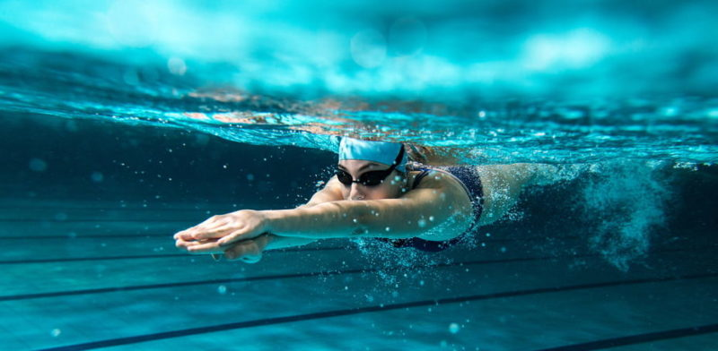

DEPORTES

¿Que es el deporte?\
¿Que es el futbol?\
¿Que es el basquetaball?\
¿Que es el boleibol?\
¿Que es la natacion?\
¿Que es el ciclismo?\
¿Que es el atletismo?\
¿Que es el golf?\
¿Que es el tenis?\
¿Que es el fronton?\